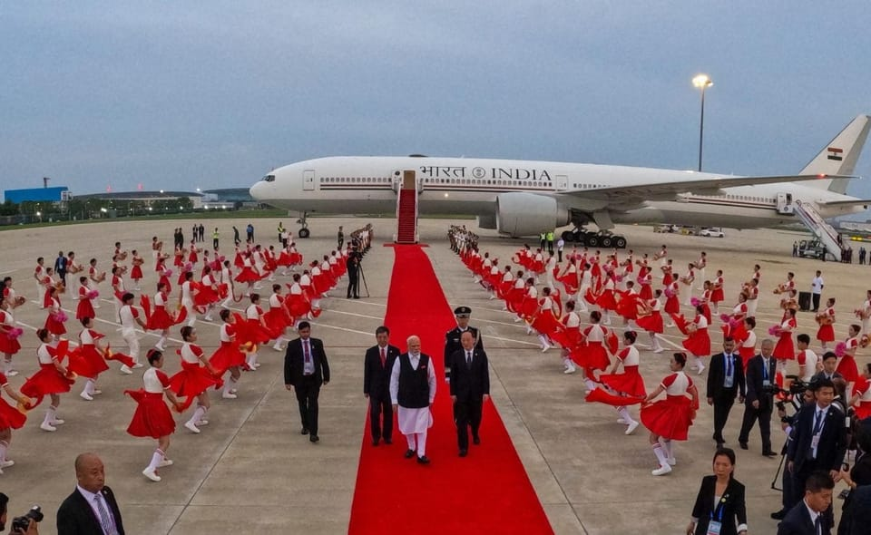

世界苦茶09月01日新闻 | 29条 | 中国展开外交攻势

中国展开外交攻势 | 印尼总统软硬并举希望化解抗议 | 中国制造业PMI再度萎缩 | 德国总理称俄乌战争长期化
每日三條新聞解析
苦茶数据
美元兑人民币：7.12（昨日7.12，前日7.12）
美元兑日元：147.18（昨日146.82，前日146.94）
上证指数：3875（昨日3857，前日3792）
标普500指数：休市（昨日6460，前日6501）
比特币：108777（昨日108696，前日109684）
布伦特原油：67.75（昨日67.48，前日68.18）
中国新闻
• 中亚建立战略伙伴关系 ：中国和亚美尼亚领导人宣布，中国和亚美尼亚建立战略伙伴关系。据新华社报道，中国国家主席习近平星期天上午在天津迎宾馆，与赴华出席上海合作组织峰会和中国抗战胜利80周年纪念活动的亚美尼亚总理帕什尼扬会面。两国领导人宣布，中国和亚美尼亚建立战略伙伴关系。习近平说，中国和亚美尼亚友谊源远流长，历久弥坚。建交33年来，两国互尊互信、互利互惠、互学互鉴，双边关系持续健康稳定发展。
• 七三一部队馆暑期人流激增 ：中国文物局代表称，侵华日军第七三一部队罪证陈列馆今年暑期的日均接待量突破1.2万人次。据澎湃新闻报道，中国人民抗日战争暨世界反法西斯战争胜利80周年纪念活动新闻中心星期天举行第三场记者招待会，介绍第四批国家级抗战纪念设施、遗址名录和著名抗日英烈、英雄群体名录，抗战纪念设施和抗战遗址、遗物修缮保护等情况。中国国家文物局革命文物司负责人彭跃辉在会上介绍，陈列展览是抗战遗址和纪念场馆讲好抗战故事、发挥教育功能的基本形式。他引述数据称，中国31个省和新疆生产建设兵团，以及港澳地区均举办了抗战主题陈列展览。
• 习近平提“龙象共舞”愿景 ：中国国家主席习近平星期天在天津会见印度总理莫迪时说，做睦邻友好的朋友、相互成就的伙伴，实现“龙象共舞”应是中印双方的正确选择。据新华社报道，习近平当天会见赴华出席上海合作组织峰会的莫迪时说，中国和印度是两大东方文明古国，是世界上人口最多的两个国家，也是全球南方重要成员，肩负着造福两国人民、促进发展中国家团结振兴、推动人类社会进步的重要责任。做睦邻友好的朋友、相互成就的伙伴，实现“龙象共舞”，应当是中印双方的正确选择。习近平强调，今年是中印建交75周年。双方要从战略高度和长远角度看待和处理中印关系，通过天津会晤再提升，推动两国关系持续健康稳定发展。
• 莫迪称中印关系积极发展 ：印度总理莫迪星期天在天津会晤中国国家主席习近平时说，中印两国关系正朝着积极的方向发展。综合路透社和彭博社报道，莫迪星期天抵达天津出席上海合作组织峰会，他在与习近平会晤时说，印度致力于在互信、尊重和体谅的基础上推进双边关系向前发展，他并提到中印在受争议的边境地区脱离接触，创造了和平稳定的氛围。莫迪还宣布中印两国计划恢复直航。不过，他未提供具体复航时间。
• 七夕登记量上海创新高 ：中国多地今年七夕迎来结婚登记率小高峰，其中，上海数据创十年来新高。综合央视新闻和第一财经报道，星期五是农历七月初七，是中国婚姻登记实现“全国通办”后迎来的首个七夕。中国多地陆续公布当天结婚登记数据，显示不少区域都迎来结婚登记小高峰。其中，上海创近十年来七夕节当天结婚登记量新高，全市共有2310对新人办理结婚登记，包括“全国通办”的1130对；辽宁全省也共办理4109对结婚登记，同比激增178%。
亚太印太新闻
• 马国首相强调团结反分化 ：马来西亚必须坚决遏制任何企图以种族、宗教或地区分化人民的现象，因为这将摧毁国家的未来。马国首相安华星期六在2025首要大会上发表囯庆献词时强调，自独立以来，团结就是马来西亚成功的基石，这份精神必须延续，以确保国家稳定与繁荣。马国星期天迎来独立68周年。安华感叹，种族论调至今仍被当作政治武器，用来削弱联邦政府改善人民福祉的政策。
• 罗智强承诺修正年改 ：台湾在野的国民党立委罗智强说，若他担任国民党主席，将捍卫军人、公务员、教师、警察以及消防员的尊严，包括修正不合理的年金改革，并为现职军警消争取合理待遇。罗智强星期天在脸书发文说，民进党执政后践踏军公教尊严，污名化退休军公教，大砍退休金，让年迈的退休军公教陷入“越老越穷”的困境。罗智强说，若当选主席，一定修正不合理的年改，并替现职军警消争取合理待遇，捍卫他们的尊严，第一箭立即停砍年金所得替代率。他说，自己担任立法院新会期国民党团书记长，这是他的优先法案，要替军公教追回公道，还尊严。
• 菲律宾设前进作战基地 ：菲律宾军方最近在靠近台湾的吕宋海峡设置“前进作战基地”，强化菲律宾“群岛防卫”能力。菲律宾军方说，这座前进作战基地靠近台湾，战略地位重要。《菲律宾每日询问报》星期天报道，这座前进作战基地位于巴丹群岛省的马哈陶镇，距台湾最南端岛屿不到100海里。菲律宾军方于星期四启用了马哈陶基地。菲律宾北吕宋军区司令布卡说，这座基地可强化菲律宾保卫北方前线的能力，确保菲方可快速回应安全及天灾挑战。
• 印尼将取消议员多项特权 ：印度尼西亚总统普拉博沃星期天说，各政党已同意取消议员的多项福利和特权，这是对示威活动的重大让步。路透社报道，普拉博沃在雅加达总统府举行的新闻发布会上发表讲话，各政党领导人出席了发布会。他说：“议会领导人已表明，他们将撤销一系列政策，包括议员津贴以及暂停海外出差的规定。”
• 印尼总统谴责部分示威行为 ：印度尼西亚总统普拉博沃星期天公开谴责示威活动，称其中一些行为构成叛国罪和恐怖主义。法新社报道，普拉博沃在雅加达总统府发表讲话时说：“和平集会的权利应该得到尊重和保护。但我们不能否认，存在一些超越法律、甚至违反法律、甚至倾向于叛国和恐怖主义的行为。”他说，示威活动应该和平进行，如果有人破坏公共设施或抢劫私人住宅，“国家必须介入保护公民”。
• 印尼议员住所遭示威者袭击 ：印度尼西亚示威活动越演越烈，当地媒体报道，印尼财长和数名议员的住所被示威者盯上，屋内部分物品被劫走。根据印尼《罗盘报》报道，示威者于星期天凌晨，闯入财长慕燕妮位于雅加达附近地区的住家，但被武装部队人员击退。另据印尼新闻网站Detik报道，印尼议员沙赫罗尼和其他两名议员的住所，有部分物品被人夺走。印尼财政部尚未对此置评。
• TikTok暂停印尼直播功能 ：由于印度尼西亚爆发暴力示威活动，社交媒体平台TikTok星期六宣布，将于未来几天暂停当地的直播功能。法新社引述TikTok发言人说，由于印尼示威活动的暴力升级，公司主动加强保护措施，以便平台能维持“安全和文明的空间”。发言人也说：“出于谨慎考虑，TikTok直播将在印尼暂停服务几天。”
• 泰民调偏好商人或军人领袖 ：泰国最新民调显示，当地多数民众希望下来会是商人或军人接任首相职务。泰国《民族报》报道，泰国国立发展管理学院星期天发布的民调结果显示，大多数泰国选民更倾向于选择商人或军人担任新首相。这项调查于8月25日至26日，针对泰国各地的1310名成年受访者进行。
• 泰国人民党将讨论组阁立场 ：泰国最大反对党人民党说，将于星期一举行会议，商讨将支持哪个政党联手组成联合政府。泰国《民族报》报道，人民党领导人纳塔蓬星期六说，人民党下周一将召开会议，讨论下一步行动。他强调，人民党目前尚未做出最终决定，任何寻求支持的政党必须正式接受人民党的条件，并派遣高层进行正式谈判。“决策过程将涉及人民党的执行委员会和议员，会议将于星期一下午举行。”
科技新闻
• 多位中国人登上AI影响力榜 ：中国科技巨头华为创始人任正非、初创公司深度求索创始人梁文锋以及宇树科技CEO王兴兴等入选美国《时代》周刊AI领域影响力人物榜单。《时代》周刊网站星期五发布2025年度AI领域最具影响力的100人名单，当中不少中国面孔，包括任正非、梁文锋、王兴兴以及小马智行CEO彭军等。其中，任正非、梁文锋和王兴兴被归于“领导者”类别，同样在这类别的还有xAI 创始人埃隆马斯克、OpenAI首席执行官萨姆・奥尔特曼、英伟达联合创始人兼CEO 黄仁勋、Meta创始人兼CEO马克扎克伯格、 台积电董事长兼CEO魏哲家等。
财经新闻
• 中国制造业PMI再度萎缩 ：中国8月份制造业采购经理指数为49.4，连续五个月处于萎缩区间。中国国家统计局星期天发布8月中国采购经理指数运行情况显示，8月份综合PMI产出指数为50.5，比上月上升0.3点，持续高于临界点，表明中国企业生产经营活动总体扩张有所加快。数据显示，8月制造业PMI为49.4，较上月上升0.1点，但已连续五个月低于50枯荣线，处于萎缩区间。
• 美继续推进贸易谈判 ：美国贸易代表格里尔星期天说，尽管美国上诉法院裁定总统特朗普的大部分关税非法，但特朗普政府仍在继续与贸易伙伴进行谈判。路透社报道，格里尔在接受福克斯新闻频道“福克斯与朋友们”节目采访时说：“我们的贸易伙伴会继续与我们密切合作进行谈判。无论法院在此期间做出何种裁决，我们都在推进协议。”格里尔没有透露美国仍在与哪些国家进行谈判，但他说，他已于星期六上午与一位贸易部长进行了交谈。
• 中国批美撤韩企晶片豁免 ：美国撤销韩企在华晶片厂豁免，中国商务部批评美国将出口管制工具化。中国商务部新闻发言人星期六称，半导体是高度全球化的产业，经过数十年发展，已形成你中有我、我中有你的产业格局，这是市场规律和企业选择共同作用的结果。发言人称，美方此举系出于一己之私，将出口管制工具化，将对全球半导体产业链供应链稳定产生重要不利影响，中方对此表示反对。
• 速卖通虚假广告遭韩重罚 ：中国跨境电商全球速卖通因在韩国发布虚假广告被处以 20.93 亿韩元罚款。韩国公正交易委员会31日表示，全球速卖通违反《标示和广告公正性维护法》，委员会决定勒令其整改，并处以上述罚款。全球速卖通旗下两家分公司涉嫌于2023年5月至2024年10月期间在韩国发布共7500多条虚假广告。委员会经查发现，该两家公司严重虚标产品原价，同时标出用该虚构原价计算出的折扣率，实际售价实则为产品原价。委员会认为，此类广告可令消费者误认为折扣率较高，进而无法作出合理选择。速卖通还被发现在官网首页未公示运营主体相关信息和使用条款。
• 美国推动欧洲跟随其脚步，对印度实施惩罚性关税： 据《今日印度》援引消息人士称，白宫已要求欧洲国家采取与美国已对印度实施的类似制裁措施，其中包括完全停止从新德里购买的所有石油和天然气。特朗普政府还希望欧洲对印度征收“二级关税”，就像美国曾警告如果新德里不停止从莫斯科购买石油，就会这样做一样。这一举动出现在印度持续反对特朗普总统因“购买”俄罗斯原油而对其征收50%关税的背景下。印度批评西方的虚伪，称虽然中国是俄罗斯石油的最大买家，欧洲也一直在不断从莫斯科购买能源产品，但两者都逃过了新德里所遭受的这种“关税待遇”。
俄乌战争
• 德国总理警告乌战或长期化 ：德国总理默茨星期天说，鉴于战争通常以军事失败或经济枯竭告终，且他认为基辅和莫斯科目前都未出现这种迹象，他已做好乌克兰战争将长期持续的准备。路透社报道，默茨发表上述言论的前一天，美国总统特朗普设定了俄罗斯和乌克兰总统举行会晤的最后期限。特朗普威胁称，如果会晤未能举行，双方将“承担后果”。默茨和法国总统马克龙说，责任在于俄罗斯总统普京，并敦促美国对莫斯科实施更严厉的制裁。
• 俄袭击致敖德萨大规模停电 ：俄罗斯无人机袭击造成乌克兰南部城市敖德萨附近的电力设施受损，导致当地超过2万9000名用户星期天上午断电。路透社报道，敖德萨州长基佩尔星期天说，受影响最严重的是敖德萨郊外的乔尔诺莫尔斯克市，俄军连夜空袭还导致居民楼和行政大楼受损。基佩尔说，“关键基础设施正在使用发电机运行”，袭击导致一人受伤。
• 把莫斯科变成巨型游乐场以转移人们对战争的注意： 对莫斯科市民而言，这是一个充满娱乐活动的夏天。在城市一座修剪整齐的公园里，造浪池翻涌，邀请人们冲浪。在一条绿树成荫的林荫大道上，居民们打板式网球、滚球和槌球。十四个露天剧场上演歌剧、话剧，甚至还有独轮车上的小丑。旋转木马不停转动。除了冲浪教练外，一切都是免费的：晴天提供防晒霜和饮用水，雨天提供雨衣和毛毯。这一切都是为期数月的“莫斯科之夏”节的一部分，这是俄罗斯政府斥资数十亿美元，将首都打造成大型狂欢节的象征，目的是让莫斯科人持续沉浸在娱乐中，从而分散对乌克兰战争的注意。“这简直无法逃避，你也不能不参与。”俄裔美籍学者尼娜·L·赫鲁晓娃谈到这一节庆时说，“你必须参与其中的一切。”
国际新闻
• 以军猛烈轰炸加沙城郊 ：以色列军队连夜从空中和地面对加沙城郊区进行猛烈轰炸，摧毁多栋房屋，迫使更多家庭撤离。与此同时，总理内坦亚胡的安全内阁定于星期天讨论夺取加沙城的计划。路透社报道，当地卫生部门说，以色列的袭击在星期天造成至少30人死亡，包括13名在加沙地带中部一个援助点附近领取食物的人，以及至少两人在加沙城一所房屋内丧生。以色列军方发言人办公室称，他们正在审查这些报告。
• 威尼斯电影节爆巴以抗议 ：数千名示威者星期六在威尼斯电影节举办期间举行集会，要求以色列停止在加沙地带的“种族灭绝”。新华社估计，星期六在威尼斯电影节举办地利多岛码头的游行人数超过5000人。他们挥舞巴勒斯坦旗帜，呼喊“解放巴勒斯坦”等口号，并举起“停止对加沙封锁”、“为平民发声”等横幅。参加示威游行的意大利市民桑德罗说，示威者希望借助威尼斯电影节的影响力向国际社会传达呼吁和平的声音。“平民和儿童不应成为战争牺牲品，人道主义必须在加沙实现。”
• 罗兴亚女性受骚扰困扰 ：根据星期天发布的一项研究，性骚扰仍是居住在孟加拉国科克斯巴扎尔难民营中的罗兴亚妇女和青少年面临的最紧迫问题。法新社报道，科克斯巴扎尔居住着约一百万罗兴亚难民，他们大多为回教徒，为逃离缅甸若开邦的军事镇压来到这里。进行这项研究的行动援助组织的政策、研究和宣传经理艾哈迈德说：“性骚扰是最大的问题。 （翻評：即便在最糟糕的地方，在難民營，這都是大問題。）
• 澳洲多城爆反移民游行 ：澳大利亚多个城市星期天举行反移民游行，澳洲政府谴责游行试图传播仇恨，并与新纳粹分子有关。路透社报道，主办方计划星期天在澳洲各大城市举行名为“为澳大利亚的游行”的反移民示威活动，包括悉尼和墨尔本，以要求政府结束“大规模移民”政策。集会主办方在社媒上发文说：“大规模移民撕裂了维系我们社区的纽带”，要求政府“结束大规模移民”。
• 特朗普拟改国防部为战争部 ：根据美国媒体报道，美国特朗普政府正在推进将国防部更名为战争部的计划，特朗普本周曾提出这一想法。《华尔街日报》星期六报道称，要重新将国防部更名为“战争部”相信需要国会采取行动，但白宫正在寻找替代这一路径的更名方法。佛州共和党众议员斯托比对年度国防政策法案提出了一项修正案，旨在更改国防部的名称，表明国会中一些共和党人支持改名。
• 特朗普拟推选民身份证令 ：美国总统特朗普说，他将发布行政命令，要求每位选民出示身份证明。特朗普星期天在社交媒体上发文说：“每张选票都必须出示选民身份证明。没有例外！我将为此发布行政命令！”他也说，除了病重的选民和远在异地的军人外，禁止邮寄投票。 （翻評：如果開始執行，又是一個最高院訴訟。）